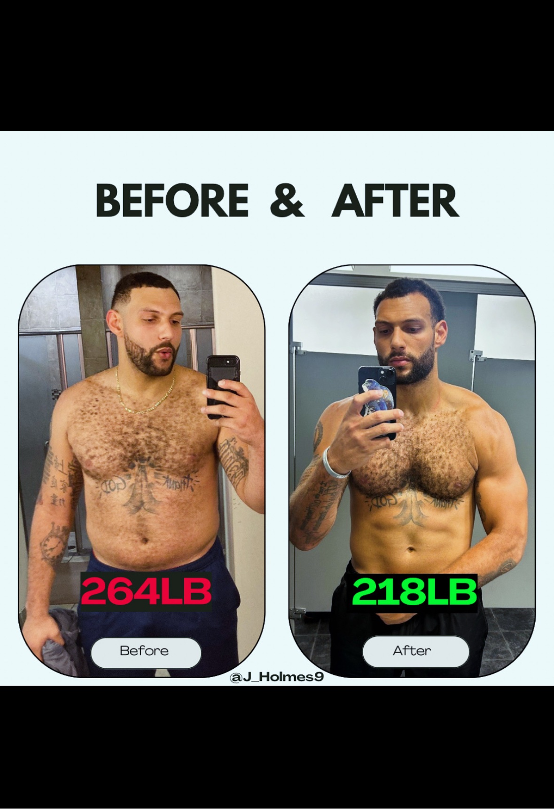
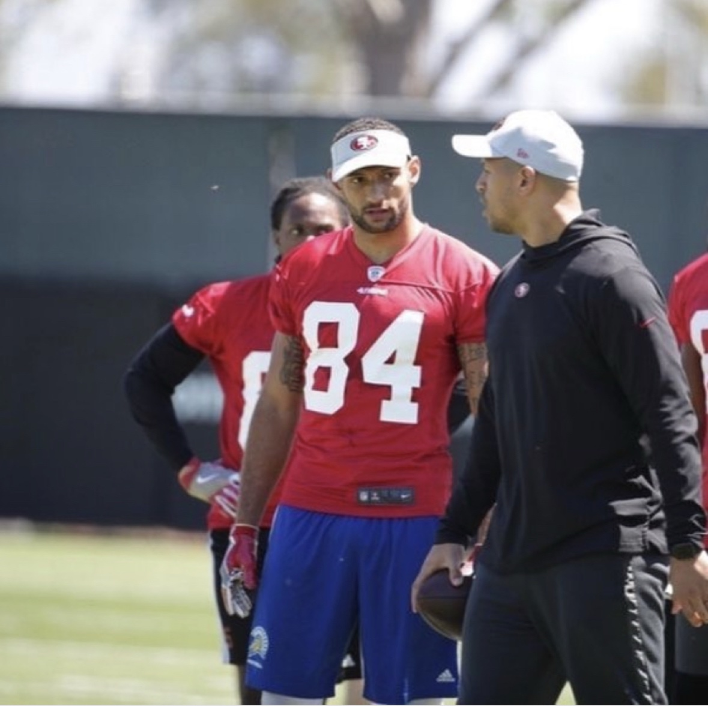

Most people don't fail at fitness. They fail at guessing. This 28-day challenge ends the guesswork: five things a day, fully in your control, with a coach holding you to every single one.
Join The Challenge: $79Former D1 Wide Receiver · Former Pro Athlete · ISSA Certified Personal Trainer
She weighs in at 192. Gets a scale and a meal plan. She works hard, gets sick in week two, pushes through anyway, bounces back. By week four her energy is better, her sleep is better, her clothes fit different. She steps on the scale: 193. One pound up. Everything her body tells her says it's working. The scale says it failed. That contradiction is where most people quit.
She weighs in at 192 too. But she gets measured, body fat, muscle, waist and hips, blood pressure, resting heart rate, strength on four lifts. She gets a program built for her body, and one job: show up, track her five, train. Week four, she steps on the scale: 193. Same number. But she doesn't stop at the number, because she can see the whole story. Body fat down. Muscle up. Stronger on nearly every lift. 73% compliance, not perfect, just consistent. She doesn't quit. She walks into week five fired up, holding proof.
Woman one didn't fail. The system failed her: one number, no context, no proof. That's the fitness industry's business model, hand you a scale and a meal plan, and let the number decide whether you keep going. For 28 days, we throw that model out. You focus on only the things fully in your hands, the daily actions that actually drive change. You do them, you check them off, you're held accountable. That's it. Control the controllables, and the results take care of themselves.
Five things a day. That's the whole job. Each one is 100% in your control, no scale, no mirror, no guessing. Four of the five run every day. Training runs on a schedule, about three days a week, and rest days don't cost you your score. You check them off in the MRS app. Miss the check-in, the day doesn't count.
Pay $79, get app access, fill out your intake. Doors close Oct 17, we start Sunday, Oct 18.
Every morning you open the app and tick your five. Your week scores out of 35, beat last week to build the streak, and I see every check-in, crushing it or quiet, you'll hear from me. A day only counts if you log it.
28 days later you get your adherence report: up to 140 checkmarks of proof that you can be consistent. Then Day 29, the door to the full REBUILD.
So this doesn't start with a program, it starts with proof you can show up. It measures two things: your consistency every day, and your body on Day 1 and Day 28. Because before any program can change your body, you have to prove you'll stick around for it. That's what the 28 days build: the one thing every failed attempt was missing.
Your baseline goes on record Day 1. Same tests Day 28. The difference lands in your graduation report, in writing. That is the part nobody else can hand you: your own proof.
Another year of letting one number decide whether you keep going. Another program you quit by week three because nobody was watching and nothing was measured. A year from now you'll either have 140 checkmarks of proof, or another story about "next time." Next time is now.
I know what rock bottom looks like. I went through depression, gained 60 pounds, and had to rebuild myself from nothing. A year later I had a six-pack and a pro contract.

264 → 218. Same guy. Different controllables.
I'm a former D1 wide receiver and pro athlete. I've coached pros, college, high school, and youth athletes. I've trained clients in a hole-in-the-wall gym and at Lifetime Fitness, and everywhere I went, the problem was the same: I could write the perfect program, but if they wouldn't stick to it, it was the shittiest program ever written.

Pro camp. The standard I hold people to, because I lived it.
So I built MRS to kill the guesswork: measure your real numbers, watch your progress in real time, document everything, and retest against your baseline so you have proof, something you can feel, see, and show. This challenge is where it starts.
Log all 28 days. If you don't feel more in control on Day 29, I'll refund the $79. No forms, no hard feelings.
The 28-day challenge proves you can show up. The next step proves what showing up did to your body, measured, scanned, and put on paper. When you finish the challenge, you've earned the door to the full REBUILD: a real baseline, your avatar, a custom program, and a graduation report that proves exactly what changed. The 28 days built your discipline, your habits, your momentum, so on Day 29 you don't start over. You walk into the program already knowing how to show up, already used to the format, and hit it full speed.
No. Nobody trains 28 days straight, and nobody should. You train on a schedule, about three days a week. That is 12 workouts, the same dose my documented results were built on. Workouts are scored against your week, rest days don't cost you points, and the other four controllables run daily.
The five are simple on purpose: a scheduled workout, protein at every meal, water through the day, your steps, your sleep. Most people fold them into the day they already have. Checking in takes under a minute.
No. That is the point. You are not handed anything complicated on day one. You get five daily actions, fully in your control, and a coach watching every one. The challenge proves you can show up before anything gets advanced.
That day scores low and we keep going. Proof was never about perfect. One of my clients moved every number that matters, body fat, muscle, blood pressure, on four of twelve sessions. Consistency beats perfect. The only way to fail is to stop logging.
No. One food rule: protein at every meal. That is it.
You get your graduation report: 28 days, up to 140 checkmarks, in writing. Then the door to the full REBUILD opens, with your $79 credited toward it. That window stays open 72 hours.
You've tried perfect before. It didn't last. This is different: five things, every day, for 28 days, with someone holding you to them. Control the controllables, and watch what happens.
Join The Challenge: $79Log all 28 days. If you don't feel more in control on Day 29, I'll refund the $79. No forms, no hard feelings.
Not ready to commit? Get the free Daily Five checklist, the exact five I check every morning. No cost, no catch.